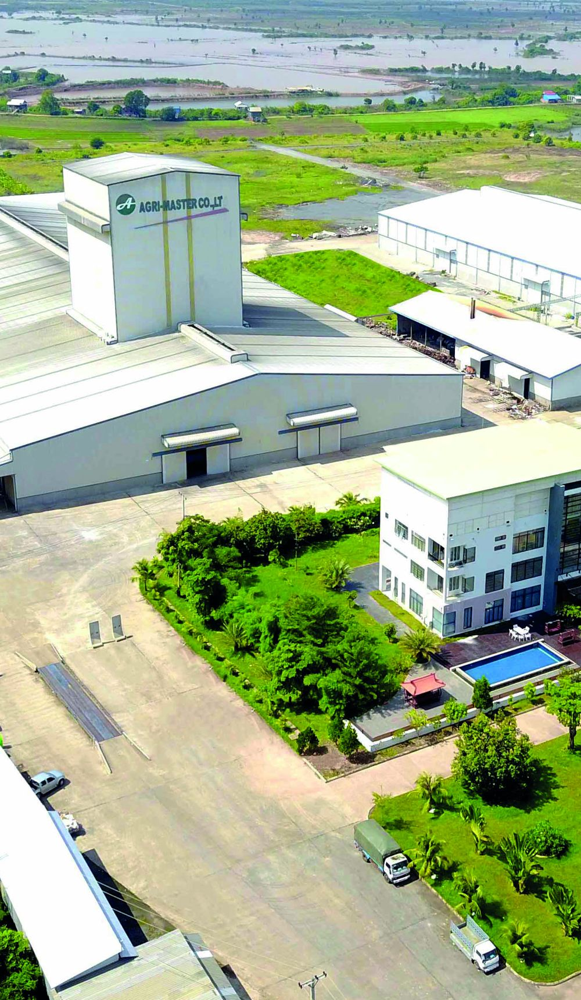
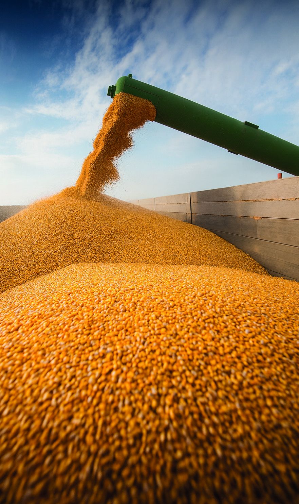

About us
Our story
Agri Master was established in 2004 as part of Medivet Cambodia, as one of Cambodia's first locally owned feedmills.
Who we are
Proudly Cambodian
We were established to serve the growing domestic feed market. Today Agri Master produces a full range of animal feed — swine, poultry, ruminant and aquaculture — and we were the first Cambodian company to commercially produce floating fish feed.
Since our founding, Agri Master has steadily grown to serve all major segments of Cambodia's animal feed sector.

Milestones
Two decades of growth
- 2004
Cambodia's first locally owned and operated animal feed producers.
- 2013
Opened a modern feed mill in Kandal Province near Phnom Penh.
- 2020
Cambodia's first aquafeed plant, with a capacity of 1,500 tons/month.
- 2023–2026
Expanding and modernising the facility, including new silos with 10,000 tons of storage capacity.
Mission & values
What guides us
Values summarised from our company profile. Formal mission statement to be provided.
Serve local farmers
Brand lines tailored to the needs of farmers in different regional markets across Cambodia.
Support local sourcing
Prioritising local corn, cassava and rice by-products, in line with our agreement with the Ministry of Commerce.
Quality & safety
Quality control integrated into every stage to support animal health, growth performance, farm productivity and food safety.
Grow with Cambodia
Continuing to expand and modernise to meet growing demand.
Quality & capacity
Built for quality and scale
Quality control is integrated into every stage of our production process to support animal health, growth performance, farm productivity and food safety.
Raw material inspection
Raw materials are inspected and tested before they are accepted and stored.
Production monitoring
Modern PLC and SCADA technology monitors and controls manufacturing.
Laboratory analysis
Moisture, crude protein, crude fat, crude fibre and ash analysed before packing.
Finished product checks
Physical quality and particle size inspected against established standards.

Raw materials: local first
We prioritise local corn, cassava and rice by-products where available, in line with our agreement with the Ministry of Commerce.
Local
- Corn
- Cassava
- Broken rice
- Rice bran
Imported
- Soybean (100% USA)
- Soybean meal (USA/S. America)
- Meat and bone meal
- Blood meal
- Palm kernel meal
- DDGS (100% USA)
- Sunflower meal (100% USA)
Looking for a reliable feed partner?
Talk to our team about the right feed line for your farm or distribution business.
Contact us